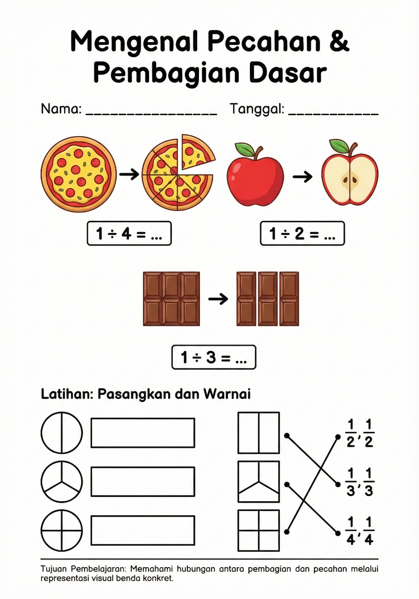
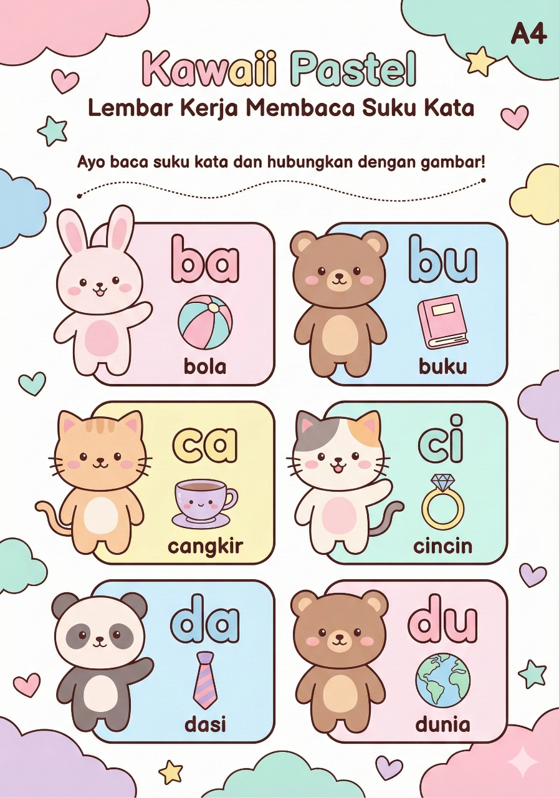
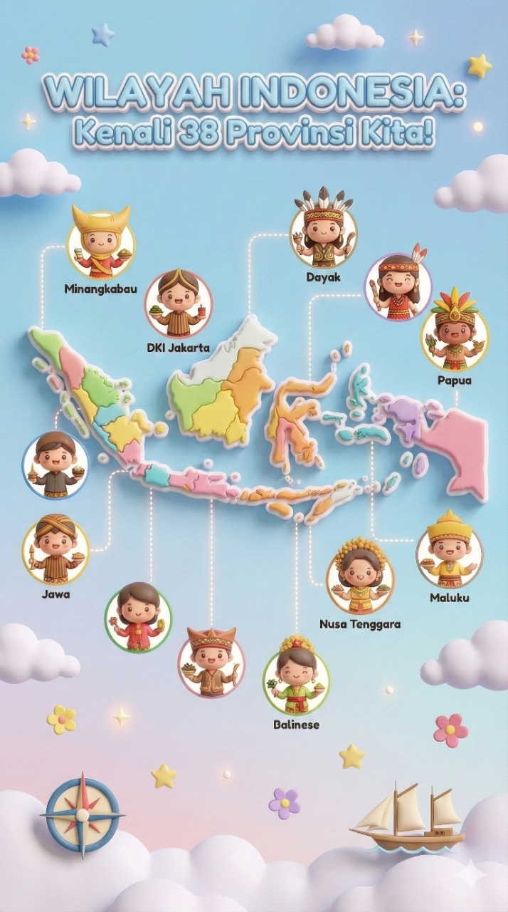

Contoh Hasil

Siklus Hidup Kupu-kupu
Mode: Infografis Materi: Siklus hidup kupu-kupu Jenjang: SD Tujuan: Memahami tahapan siklus hidup Gaya Visual: Pixar

Pecahan
Mode: Worksheet Materi: Pecahan Jenjang: SD Tujuan: Mengenal pembagian Gaya Visual: Flat Vector

Tata Surya
Mode: Infografis Materi: Tata Surya Jenjang: SMP Tujuan: Mengenal planet Gaya Visual: Pixar

Membaca Permulaan
Mode: Worksheet Materi: Membaca suku kata Jenjang: PAUD Tujuan: Mengenal bunyi dan huruf Gaya Visual: Kawaii Pastel

Peta Indonesia
Mode: Infografis Materi: Wilayah Indonesia Jenjang: SD Tujuan: Mengenal provinsi Gaya Visual: Soft 3D Cartoon